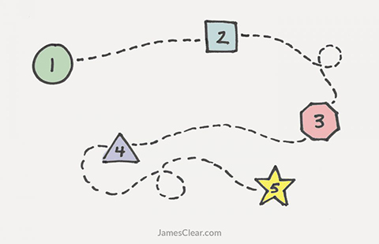

For a More Creative Brain Follow These 5 Steps
Nearly all great ideas follow a similar creative process and this article explains how this process works. Understanding this is important because creative thinking is one of the most useful skills you can possess. Nearly every problem you face in work and in life can benefit from innovative solutions, lateral thinking, and creative ideas.
Anyone can learn to be creative by using these five steps. That's not to say being creative is easy. Uncovering your creative genius requires courage and tons of practice. However, this five-step approach should help demystify the creative process and illuminate the path to more innovative thinking
To explain how this process works, let me tell you a short story.

A Problem in Need of a Creative Solution
Photography was a new and exciting medium at the time. Readers wanted to see more pictures, but nobody could figure out how to print images quickly and cheaply.
For example, if a newspaper wanted to print an image in the 1870s, they had to commission an engraver to etch a copy of the photograph onto a steel plate by hand. These plates were used to press the image onto the page, but they often broke after just a few uses. This process of photoengraving, you can imagine, was remarkably time consuming and expensive.
The man who invented a solution to this problem was named Frederic Eugene Ives. He went on to become a trailblazer in the field of photography and held over 70 patents by the end of his career. His story of creativity and innovation, which I will share now, is a useful case study for understanding the 5 key steps of the creative process.
A Flash of Insight
Ives got his start as a printer's apprentice in Ithaca, New York. After two years of learning the ins and outs of the printing process, he began managing the photographic laboratory at nearby Cornell University. He spent the rest of the decade experimenting with new photography techniques and learning about cameras, printers, and optics.
In 1881, Ives had a flash of insight regarding a better printing technique.
"While operating my photostereotype process in Ithaca, I studied the problem of halftone process," Ives said. "I went to bed one night in a state of brain fog over the problem, and the instant I woke in the morning saw before me, apparently projected on the ceiling, the completely worked out process and equipment in operation."
Ives quickly translated his vision into reality and patented his printing approach in 1881. He spent the remainder of the decade improving upon it. By 1885, he had developed a simplified process that delivered even better results. The Ives Process, as it came to be known, reduced the cost of printing images by 15x and remained the standard printing technique for the next 80 years.
Alright, now let's discuss what lessons we can learn from Ives about the creative process
The 5 Stages of the Creative Process
{kind=link}
In 1940, an advertising executive named James Webb Young published a short guide titled, A Technique for Producing Ideas. In this guide, he made a simple, but profound statement about generating creative ideas.
According to Young, innovative ideas happen when you develop new combinations of old elements. In other words, creative thinking is not about generating something new from a blank slate, but rather about taking what is already present and combining those bits and pieces in a way that has not been done previously.
Most important, the ability to generate new combinations hinges upon your ability to see the relationships between concepts. If you can form a new link between two old ideas, you have done something creative.
Young believed this process of creative connection always occurred in five steps.
1. Gather new material. At first, you learn. During this stage you focus on 1) learning specific material directly related to your task and 2) learning general material by becoming fascinated with a wide range of concepts.
2. Thoroughly work over the materials in your mind. During this stage, you examine what you have learned by looking at the facts from different angles and experimenting with fitting various ideas together.
3. Step away from the problem. Next, you put the problem completely out of your mind and go do something else that excites you and energizes you.
4. Let your idea return to you. At some point, but only after you have stopped thinking about it, your idea will come back to you with a flash of insight and renewed energy.
5. Shape and develop your idea based on feedback. For any idea to succeed, you must release it out into the world, submit it to criticism, and adapt it as needed.
The Idea in Practice
The creative process used by Frederic Eugene Ives offers a perfect example of these five steps in action.
First, Ives gathered new material. He spent two years working as a printer's apprentice and then four years running the photographic laboratory at Cornell University. These experiences gave him a lot of material to draw upon and make associations between photography and printing.
Second, Ives began to mentally work over everything he learned. By 1878, Ives was spending nearly all of his time experimenting with new techniques. He was constantly tinkering and experimenting with different ways of putting ideas together.
Third, Ives stepped away from the problem. In this case, he went to sleep for a few hours before his flash of insight. Letting creative challenges sit for longer periods of time can work as well. Regardless of how long you step away, you need to do something that interests you and takes your mind off of the problem.
Fourth, his idea returned to him. Ives awoke with the solution to his problem laid out before him. (On a personal note, I often find creative ideas hit me just as I am lying down for sleep. Once I give my brain permission to stop working for the day, the solution appears easily.)
Finally, Ives continued to revise his idea for years. In fact, he improved so many aspects of the process he filed a second patent. This is a critical point and is often overlooked. It can be easy to fall in love with the initial version of your idea, but great ideas always evolve.
The Creative Process in Short
The creative process is the act of making new connections between old ideas. Thus, we can say creative thinking is the task of recognizing relationships between concepts.
One way to approach creative challenges is by following the five-step process of 1) gathering material, 2) intensely working over the material in your mind, 3) stepping away from the problem, 4) allowing the idea to come back to you naturally, and 5) testing your idea in the real world and adjusting it based on feedback.
Being creative isn't about being the first (or only) person to think of an idea. More often, creativity is about connecting ideas.
Thanks for reading. You can get more actionable ideas in my popular email newsletter. Each week, I share 3 short ideas from me, 2 quotes from others, and 1 question to think about. Over 1,000,000 people subscribe. Enter your email now and join us.